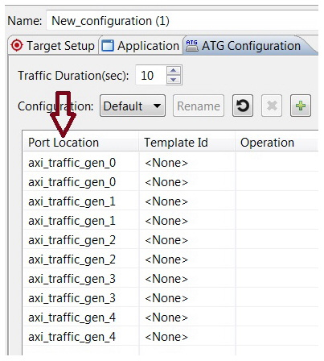

System Performance Modeling (SPM) offers system-level performance analysis for characterizing and evaluating the performance of hardware and software systems. In particular, it enables analysis of the critical partitioning trade-offs between the ARM Cortex A9 processors and the programmable fabric for a variety of different traffic scenarios. It provides graphical visualizations of AXI transaction traces and system-level performance metrics such as throughput, latency, utilization, and congestion.
In the current release, SPM is supported only for bare metal/standalone applications.
The predefined flow provided with SDK uses the fixed design, and comes with a fixed bitstream. In this design, there are five AXI Traffic Generators (ATGs), with one connected to each of the four High Performance ports (HP0-3) and one connected to the Accelerator Coherency Port (ACP). The ATGs are set up and controlled using one of the General Purpose (GP) ports. In addition, an AXI Performance Monitor (APM) is included in order to monitor the AXI traffic on the HP0-3 and ACP ports.
The SDK predefined design flow includes the following steps:
Performance Analysis can be done on any user defined applications. For information, see System Performance Modeling Using a User-Defined Flow.
